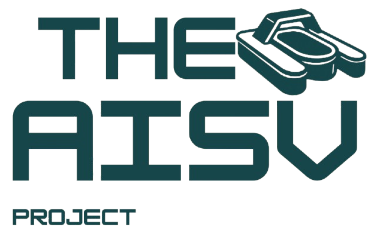
CodeSystems
Team
BURGER represents a significant advancement in autonomous surface vessel (ASV) aimed at addressing debris collection in water bodies. This ASV features a seabin-inspired collection mechanism, with a custom-built battery and smart system behaviour that enables the bot for effective debris collection even in the challenging nature of the open waters. Mechanical design led by Saif Alsaad, electrical system led by Laith Mohamed, embedded systems led by Abdul Maajid Aga.
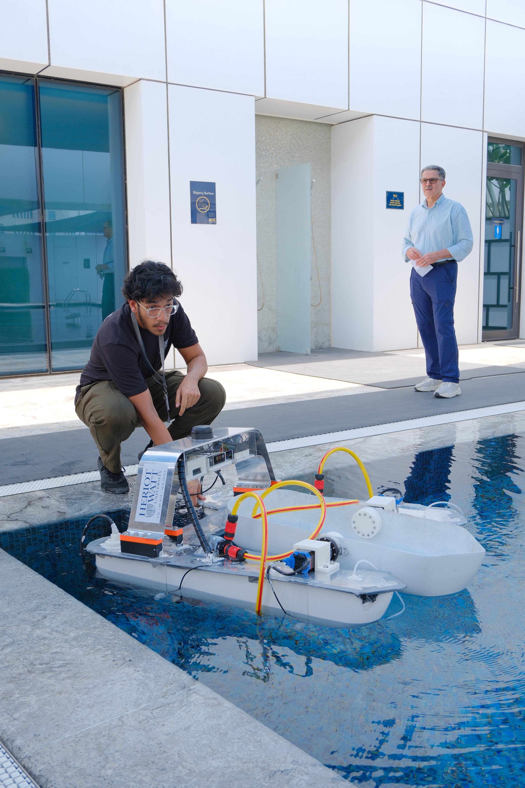
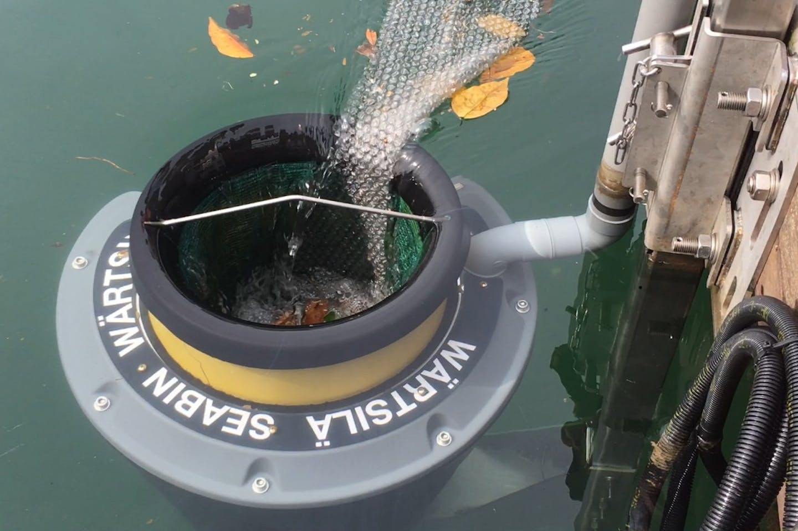
Different collection approaches come with distinct trade-offs in storage efficiency, space usage, and mechanical complexity. Here is how BURGER's seabin-inspired mechanism compares to alternative designs.
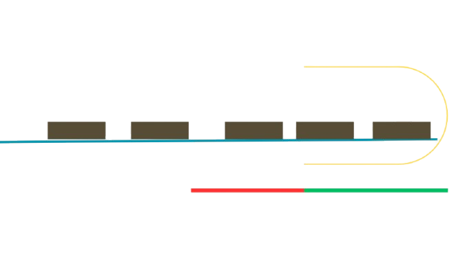
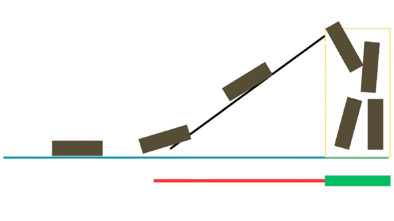
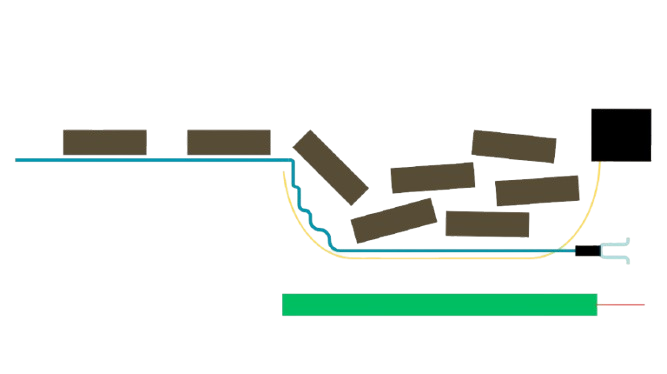
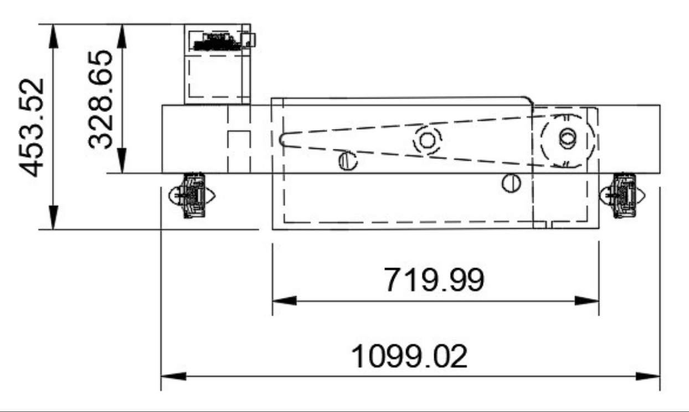
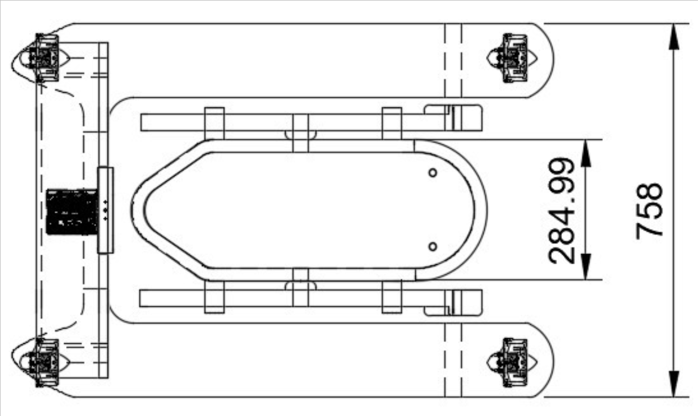
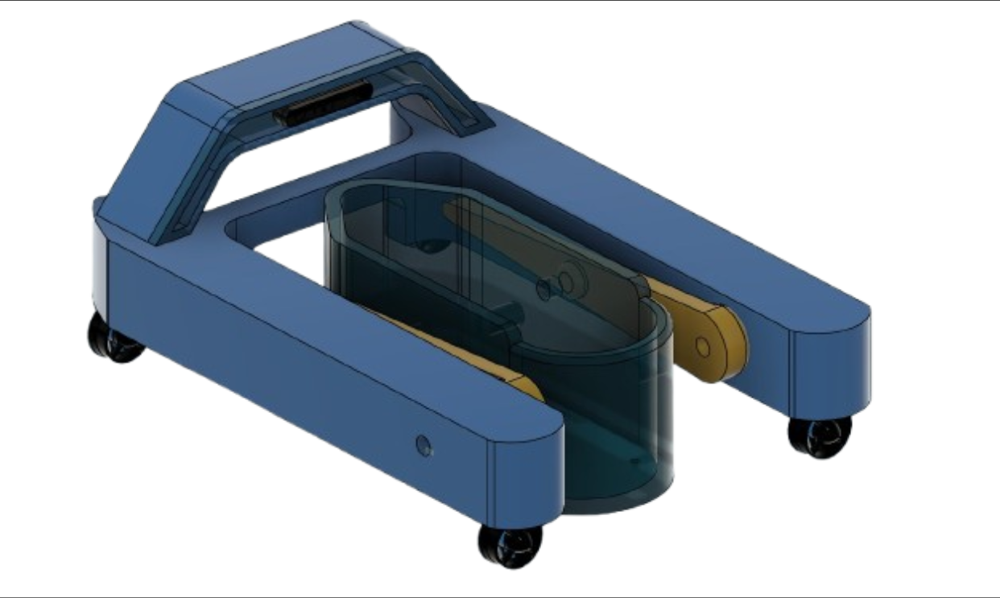
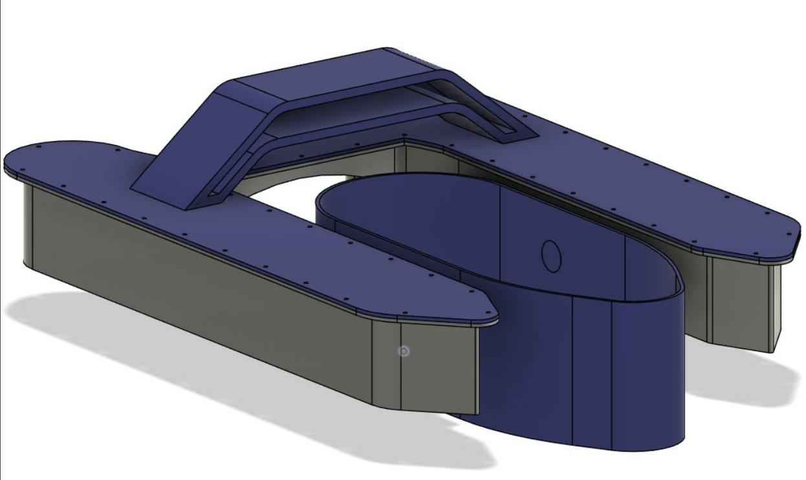
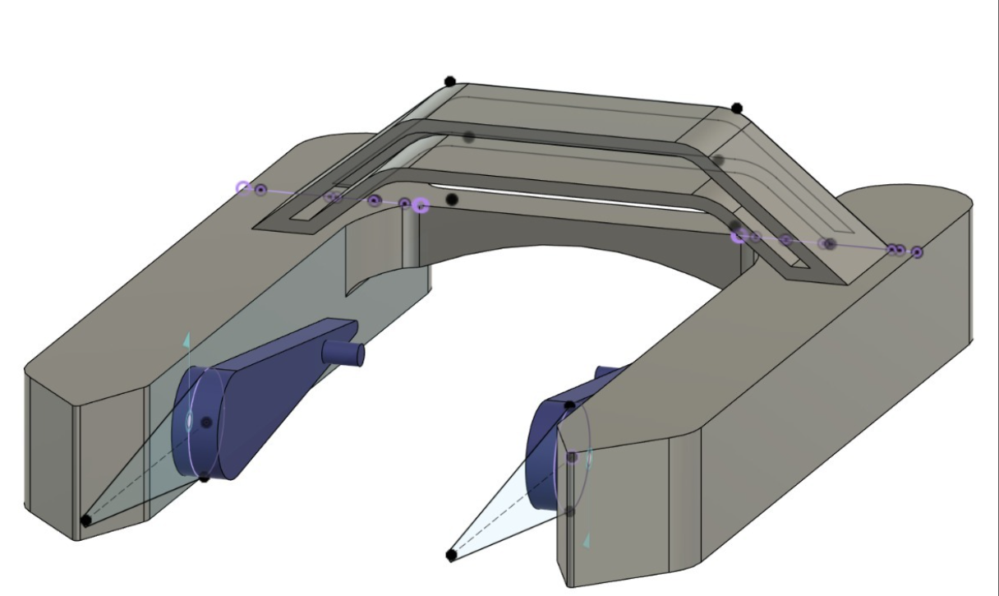
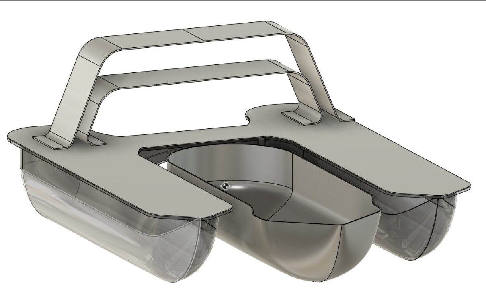
A custom-welded battery module in 7s6p arrangement with BMS systems for safety and monitoring.
Jetson Nano embedded computer used for main processing with ESP32 microcontrollers.
Water-cooled ESC control thrusters while the servo-stepper provides precise movement of the bucket.
OAK-D Pro W camera with stereo capabilities, 9-axis IMU, and LiDAR for environmental awareness.
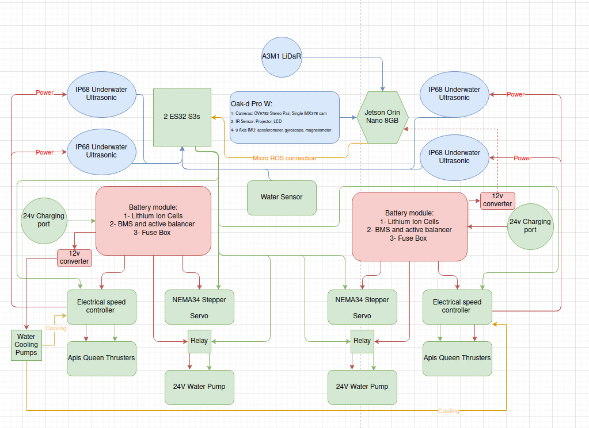
SUSHI is a vision-first navigation system for Autonomous Surface Vehicles that fuses detection, water segmentation, and monocular depth to produce camera-centric navigation grids for planning and control. The system is integrated into ROS for full robot operation, but was built mostly using PyTorch with the perception models and path planning algorithms written from scratch. It is structured around three main components: a Vision Fusion module that converts raw camera frames into spatial object data, a Planning component that guides the vessel toward targets or explores autonomously, and a Control layer that follows the planned path while handling emergency avoidance reactively. SUSHI was my contribution to the project.
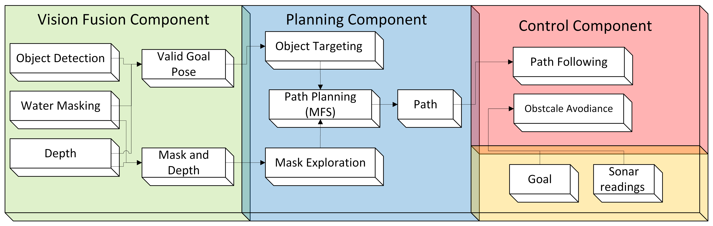
The YOLO framework was deployed for trash and obstacle detection, with the core challenge being that most available datasets provide grounded or close-up images of debris that do not generalise to floating objects seen from an ASV. A SAHI mechanism was applied to slice each frame into overlapping tiles, and the model was retrained from scratch using simulation and pool data annotated with SAM2 and a CSRT tracker, achieving a mAP@0.5 of 94.5% with an F1 score of 0.91.
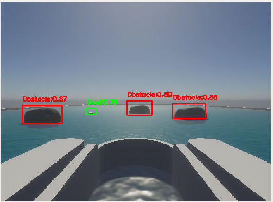
A lightweight U-Net was trained using knowledge distillation from SAM2, where the teacher model's soft logits were extracted offline and used alongside binary ground truth masks during student training. Using only 500–550 frames from 20 video sequences, the distilled model achieves over 90% accuracy on unseen data, outperforming a conventional data-driven model trained on 3,000+ images which reached 80%.
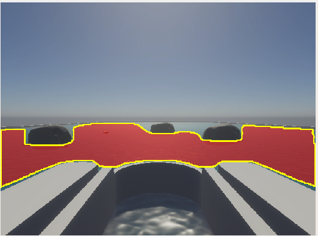
Stereo and IR-based depth sensors struggle on water due to reflections producing noisy and temporally unstable readings. Depth-Anything V2 was used instead, a monocular depth model that, as noted by its authors, benefits from synthetic training data precisely because of its advantage on transparent and reflective surfaces. Against ArUco marker ground truth it achieved a mean ARE of 0.0067 a 98.7% improvement over OAK-D and a 9.75× improvement in temporal stability.
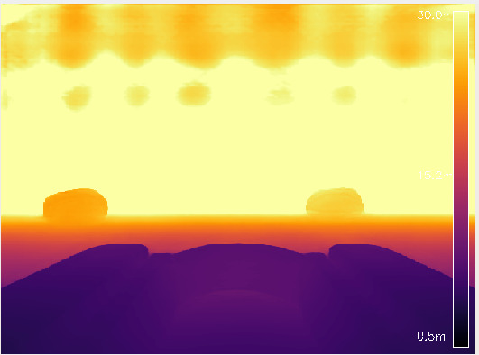
The SUSHI node fuses detection, water masking, and depth into a single navigation grid. Each detected object is validated against the water mask, assigned a unique ID, and given key attributes: confidence, bounding box width, metric distance, and camera angle. Object priority is ranked by depth, and the fusion layer filters out objects above the water surface or within the robot zone.
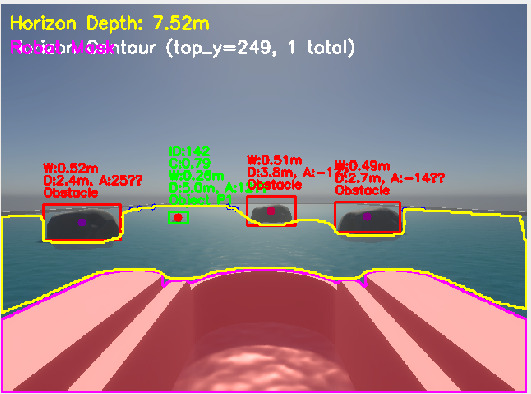
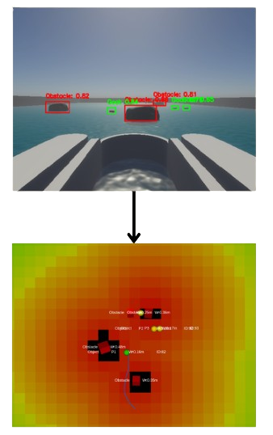
MFS addresses a core limitation of Artificial Potential Fields, local minima, by blending a reactive APF component with a global wavefront flow field. The blending coefficient γ adjusts dynamically based on clearance distance, stagnation count, and goal proximity, giving each grid cell a spatially-aware potential rather than fixed parameters. Across 15 runs, MFS achieved a 100% success rate against Classic APF's 33%, Paraboloidal's 40%, and Conical's 80%.
Three behaviours govern planning in priority order. Target Seeking activates when debris is detected and overrides everything else. Water Exploration samples the water mask for curious navigation when no goal is visible, biasing toward denser and farther water regions. Idle clears active paths and awaits new data when no conditions are met.
The main control loop uses a fuzzy logic controller with four inputs: distance to lookahead point, heading error, cross-track error, and obstacle proximity. Each is processed through triangular membership functions for smoother transitions than binary logic. In simulation the system achieved an average cross-track error of 0.086m and RMS error of 0.128m, with the executed trajectory differing from the planned path by only 0.12m.
When side sonars or horizon depth readings detect an imminent obstacle, the Dynamic Window Approach overrides path following. A window of feasible velocities is constructed, trajectories are predicted and scored for heading, clearance, and speed, and the optimal command is selected. A turn-in-place fallback activates when all forward trajectories are blocked, rotating the vessel until a clear path is found.
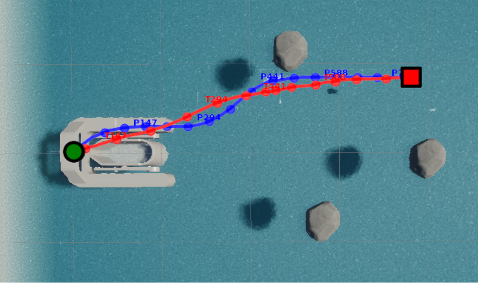
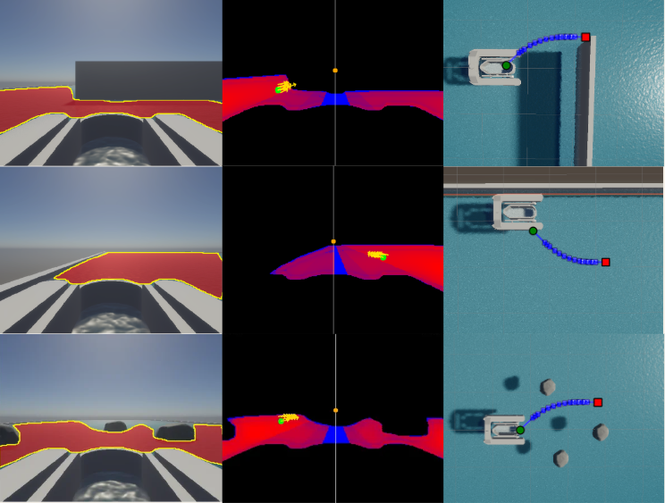
When no debris goal is detected, the system switches to a water mask exploration behaviour. Inspired by line-of-sight principles, the explorer samples candidate points within the visible water mask, biasing toward areas with higher water density and greater distance from shorelines. This drives a water-curious behaviour that keeps the vessel navigating safely without any prior map or goal. Three conditions are demonstrated: dead end escape, wall avoidance, and obstacle-dense environments, showing the system consistently choosing the safest and most open path within its visible area.
TOAST (Test Operations and Aquatic Simulation Technology) is a hardware-accelerated simulation environment for autonomous surface vehicles built on Unity. It was developed specifically for the AISV project to enable full development and validation of SUSHI before any hardware deployment. The simulation recreates a pool environment with coloured cans as collection goals and rocks as obstacles, with the robot equipped with a front-facing camera as the primary navigation sensor and four ultrasonic sensors on the sides for emergency avoidance. A LiDAR was available but deliberately excluded to demonstrate the viability of a vision-first approach.
The simulator provides a ROS2 interface for full digital twin operation, streaming sensor data and receiving thruster commands exactly as the real vessel would. Scenarios are configurable and saveable as JSON files, with obstacles randomisable in position and orientation for varied data collection. Two buoyancy modes are implemented, one fully physics-based using hydrodynamic equations and one kinematic for lightweight simulation. TOAST was the primary environment for developing and benchmarking all SUSHI components. Led by Muhammad Abban.
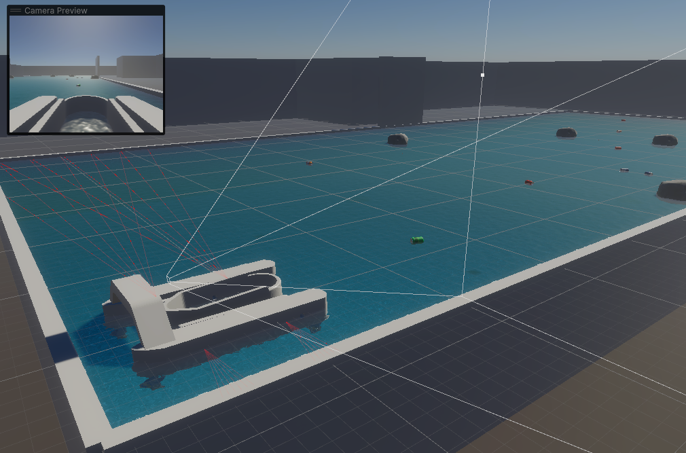
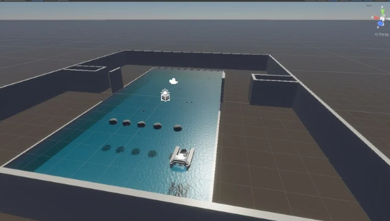
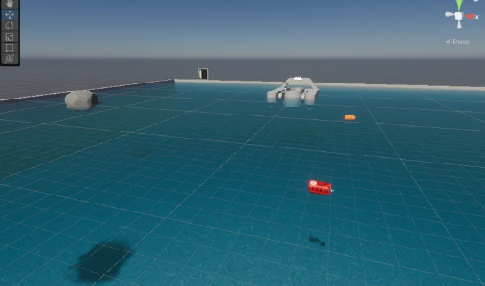